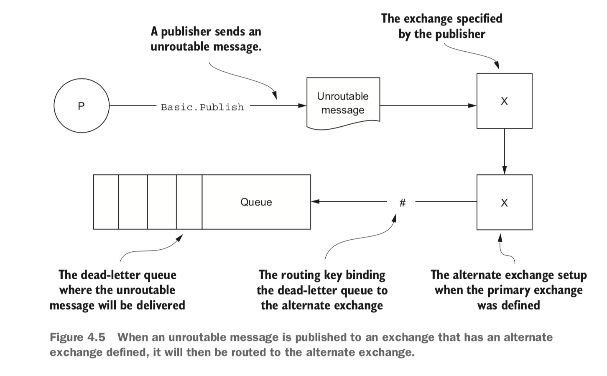
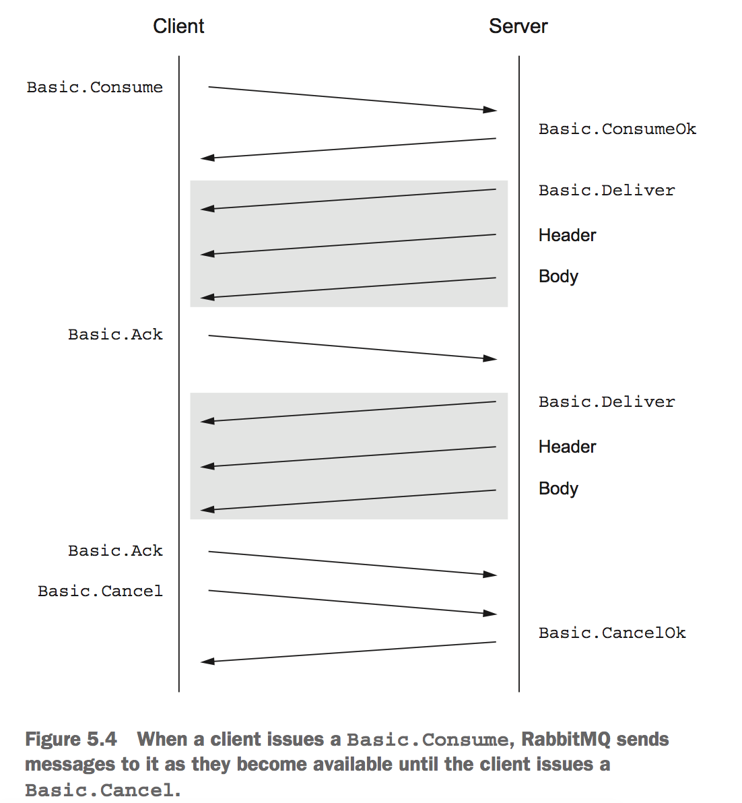
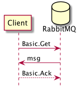
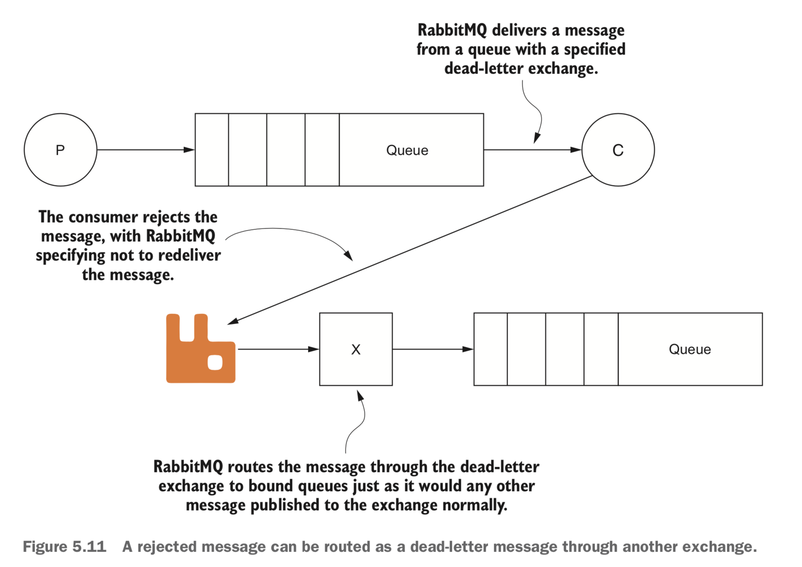

RabbitMQ
Table of Contents
| Author | Hao Ruan (haoru@cisco.com) |
| Date | 2019-05-20 00:19:00 |
Table of Contents
1 AMQP
1.1 AMQP Frame
AMQP uses classes and methods, referred to as AMQP commands, to create a common language between clients and servers.

1.1.1 Frame Types
The AMQP specification defines five types of frames:
- Protocol header frame Only used once, when connecting to RabbitMQ.
- Method frame Carries with it the RPC request or response that's being sent to or received from RabbitMQ.
- Content header frame Contains the size and properties for a message.
- Body frames Contain the content of messages.
- Heartbeat frame Sent to and from RabbitMQ as a check to ensure that both sides of the connection are available and working properly.
1.1.1.1 Method frame
1.1.1.2 Content header frame

1.1.1.3 Body frame
1.2 AMQP Model
The AMQ model logically defines three abstract components in broker software that define the routing behavior of messages:
- Exchange The component of the message broker that routes messages to queues
- Queue A data structure on disk or in memory that stores messages
- Binding A rule that tells the exchange which queue the messages should be stored in
1.3 Protocol Implement
1.3.1 Declaring exchange

If, for whatever reason, the command should fail, RabbitMQ will close the channel by sending a Channel.Close command.
This response will include a numeric reply code and text value indicating why the Exchange.Declare failed and the channel was closed.
1.3.2 Declaring queue
- 消费者和生产者都能使用
Queue.Delare命令来创建队列。 - 如果消费者在同一信道上已订阅了另一个信道的话，则无法再声明队列了，必须先取消订阅。
- 当创建队列时，可以指定队列名称，如果不指定的话，RabbitMQ 会分配一个随机名称并在
Queue.Declare命令的响应中返回。 - 如果需要临时队列只为一个消费者服务的话，可以结合使用
auto-delete和exclusive，当消费者断开连接时，队列就被移除了。 - 发出去的消息如果路由到了不存在的队列的话，RabbitMQ 会忽略它们。因此，一般情况下，生产者和消费者都应该尝试创建队列。
- Should the
Queue.Declarecommand fail, the channel will be closed.
When declaring a queue, there's no harm in issuing the same Queue.Declare command more than once. RabbitMQ will consider subsequent queue declares to be PASSIVE and will return useful information about the queue, such as the number of pending messages in the queue and the number of consumers subscribed to it.
1.3.3 Binding queue to exchange
1.3.4 Publishing message

1.3.4.1 mandatory flag
The mandatory flag is an argument that's passed along with the Basic.Publish RPC command and tells RabbitMQ that if a message isn't routable,
it should send the message back to the publisher via a Basic.Return RPC.
1.3.4.2 Publisher Confirm
Prior to publishing any messages, a message publisher must issue a Confirm.Select RPC request to RabbitMQ and
wait for a Confirm.SelectOk response to know that delivery confirmations are enabled.
For each message that a publisher sends to RabbitMQ, the server will respond with an acknowledgement response (Basic.Ack) or
a negative acknowledgement response (Basic.Nack).
Any application that has enabled Publisher Confirms should be able to receive a confirmation at any point after sending the message.
1.3.4.3 Alternate exchange

1.3.4.4 Transaction

Transaction allows publishers more control over the SEQUENCE. If you're considering transactions as a method of delivery confirmation, consider using Publisher Confirms as a LIGHTWEIGHT alternative.
1.3.4.5 HA queues
Allows queues to have redundant copies across multiple servers.
HA queues have a single primary server node, and all the other nodes are secondary.
Should the primary node fail, one of the secondary nodes will take over the role of primary node.
Should a secondary node be lost in an HA queue configuration, the other nodes would continue to operate as they were, sharing the state of operations that take place across all configured nodes.
When a lost node is added back, or a new node is added to the cluster, it won't contain any messages that are already in the queue across the existing nodes.
Instead, it will receive all new messages and only be in sync once all the previously published messages are consumed.
1.3.4.6 Delivery Mode 2
In addition to delivery-mode of 2, for messages to truly survive a restart of a RabbitMQ broker,
your queues must be declared as durable when they're created.
It's a costly way to guarantee delivery.
1.3.5 Consuming message
Consuming messages with Basic.Consume means your application automatically receives messages from RabbitMQ as they become available
until the client issues a Basic.Cancel.
Application needs to ACKNOWLEDGE the message to let RabbitMQ know the message has been processed.

1.3.5.1 Consumer Tag
When your application issues Basic.Consume, a unique string is created that identifies the application on the open channel with RabbitMQ.
This string, called a consumer tag, is sent to your application with each message from RabbitMQ.
The consumer tag can be used to cancel any future receipt of messages from RabbitMQ by issuing a Basic.Cancel RPC command.
1.3.5.2 no-ack argument
There's a no-ack flag with Basic.Consume RPC request.
When enabled, this flag tells RabbitMQ that your consumer won't acknowledge the receipt of messages and
that RabbitMQ should just send them as quickly as it is able.
If the no_ack flag is set to false, a consumer must acknowledge each message that it receives by sending a Basic.Ack RPC request.
1.3.5.2.1 Delivery tag
When the Basic.Ack response frame is sent, the consumer must pass with it an argument from the Basic.Deliver method frame
called the delivery tag.
RabbitMQ uses the delivery tag along with the channel as a unique identifier to communicate message acknowledgement, rejection,
and negative acknowledgement.
1.3.5.3 Prefetching (QoS)
prefetch 允许为每个 consumer 指定最大的 unacked messages 数目。
简单来说就是用来指定一个 consumer 一次可以从 RabbitMQ 中获取多少条 message 并缓存在 client 中。
一旦缓冲区满了，RabbitMQ 将会停止投递新的 message 到该 consumer 中直到它发出 ack 。
总的来说，consumer 负责不断处理消息，不断 ack ，然后只要 unacked 数少于 prefetch * consumer 数目，broker 就不断将消息投递过去。
1.3.5.4 Basic.Get

Basic.Get 命令会订阅消息，获得单条消息，然后取消订阅，因此效率不高。
1.3.5.5 Basic.Reject
This RPC carries with it the delivery tag created by RabbitMQ to uniquely identify the message.
When a consumer rejects a message, you can instruct RabbitMQ to either discard the message or to requeue the message with the requeue flag.
When a message is requeued, the redelivered flag is set in the message, informing the message's next consumer that it had been previously delivered.
Basic.Reject allows for a single message to be rejected. You can't reject multiple messages at the same time using Basic.Reject.
1.3.5.6 Basic.Nack
Basic.Nack method implements the same behavior as the Basic.Reject, but it adds "multiple-reject" behavior.
1.3.5.7 Dead letter exchanges
Dead letter exchange is actually a normal exchange.
The only thing that makes an exchange a dead-letter exchange is the declared use of the exchange for rejected messages when creating a queue.
Upon rejecting a message that isn't requeued, RabbitMQ will route the message to the exchanged specified in the queue's x-dead-letter-exchange argument.
Dead-letter exchanges AREN'T THE SAME AS the alternate exchanges. An expired or rejected message is delivered via a dead-letter exchange, whereas an alternate exchange routes messages that otherwise couldn't be routed by RabbitMQ.

We can use the same exchange for dead-lettered messages as non-dead-lettered messages
but to ensure that the dead-lettered messages aren't delivered to the same queue.
Set x-dead-letter-routing-key when declaring the queue.
1.3.6 Basic.Properties
| Property | Type | For use by | Suggested or specified use |
|---|---|---|---|
| app-id | short-string | Application | Useful for defining the application publishing the messages. |
| content-encoding | short-string | Application | Specify whether your message body is encoded in some special way, such as zlib, deflate, or Base64. |
| content-type | short-string | Application | If the message is in reference to some other message or uniquely identifiable item, the correlation-id is a good way to indicate what the message is referencing. |
| delivery-mode | octet | RabbitMQ | A value of 1 tells RabbitMQ it can keep the message in memory; 2 indicates it should also write it to disk. |
| expiration | short-string | RabbitMQ | An epoch or Unix timestamp value as a text string that indicates when the message should expire. |
| headers | table | Both | A free-form key/value table that you can use to add additional metadata about your mes- sage; RabbitMQ can route based upon this if desired. |
| message-id | short-string | Application | A unique identifier such as a UUID that your application can use to identify the message. |
| priority | octet | RabbitMQ | A property for priority ordering in queues. |
| timestamp | timestamp | Application | An epoch or Unix timestamp value that can be used to indicate when the message was created. |
| type | short-string | Application | A text string your application can use to describe the message type or payload. |
| user-id | short-string | Both | A free-form string that, if used, RabbitMQ will validate against the connected user and drop messages if they don't match. |
2 交换器
2.1 属性
- Name
- Durability (exchanges survive broker restart)
- Auto-delete (exchange is deleted when last queue is unbound from it)
- Arguments (optional, used by plugins and broker-specific features)
2.2 direct
如果路由键匹配的话，消息就被投递到对应的队列。
RabbitMq 会默认实现一个类型为 direct 的，名称为空白字符串的交换器。
当声明一个队列时，一开始该队列会自动绑定到默认交换器， 并以队列名称作为路由键 。
之后可以发送 exchange.declare 命令并设置合适的参数，就可以升级成具体类型交换器。

Figure 19: direct router
2.3 fanout
将收到的消息广播的绑定的队列上。
Figure 20: fanout router
2.4 topic

Figure 21: topic router
.把路由键分为了几部分*匹配特定位置的任意文本#匹配所有规则
2.5 路由

3 RabbitMQ 管理
3.1 日志
3.2 配置文件
/etc/rabbitmq/rabbitmq.config
3.3 接入 Eshell
erl -setcookie <cookie> -name test@<node-name> -remsh rabbit@<node-name> -hidden
退出时要用 Ctrl+G 然后执行 q 命令退出。
spawn(fun() -> etop:start([{output, text}, {interval, 5}, {lines, 10}, {sort, msg_q}]) end).
spawn(fun() -> etop:start([{output, text}, {interval, 5}, {lines, 10}, {sort, reductions}]) end).
4 代码示例
4.1 基本用法
4.1.1 生产者
import pika EXCHANGE = 'hello-exchange' conn_params = pika.ConnectionParameters(host='10.74.68.89', port=45672, socket_timeout=3.0) conn_broker = pika.BlockingConnection(conn_params) # 使用默认 vhost / channel = conn_broker.channel() channel.exchange_declare(exchange=EXCHANGE, exchange_type='direct', passive=False, durable=True, auto_delete=False) msg_props = pika.BasicProperties() msg_props.content_type = 'text/plain' channel.basic_publish(exchange=EXCHANGE, properties=msg_props, body='Hello World', routing_key='hola') conn_broker.close()
4.1.2 消费者
import pika EXCHANGE = 'hello-exchange' QUEUE = 'hello-exchange' TAG = 'hello-consumer' conn_params = pika.ConnectionParameters(host='10.74.68.89', port=45672, socket_timeout=3.0) conn_broker = pika.BlockingConnection(conn_params) channel = conn_broker.channel() channel.exchange_declare(exchange=EXCHANGE, # 如果没有就创建，否则继续 exchange_type='direct', passive=False, durable=True, auto_delete=False) channel.queue_declare(queue=QUEUE) channel.queue_bind(queue=QUEUE, exchange=EXCHANGE, routing_key='hola') def msg_consumer(channel, method, header, body): channel.basic_ack(delivery_tag=method.delivery_tag) print("receive: {}".format(body)) channel.basic_cancel(consumer_tag=TAG) channel.stop_consuming() channel.basic_consume(msg_consumer, queue=QUEUE, consumer_tag=TAG) # 一个 channel 可以有多个订阅，使用 consumer_tag 来标识订阅 print(' [*] Waiting for messages. To exit press CTRL+C') channel.start_consuming()
4.2 发送方确认模式
信道进入 confirm 模式，所有在信道上发布的消息都会被指派一个唯一的 ID 号（从 1 开始）。 一旦消息被投递给所有匹配队列后，信道会发送一个发送方确认模式给生产者应用程序（包含消息的唯一 ID ）。 这使得生产者知晓信息已经安全到达目的队列了。
4.2.1 生产者
#! /usr/bin/env python3 # -*- coding: utf-8 -*- import pika EXCHANGE = 'hello-exchange' conn_params = pika.ConnectionParameters(host='10.74.68.89', port=45672, socket_timeout=3.0) conn_broker = pika.BlockingConnection(conn_params) # 使用默认 vhost / channel = conn_broker.channel() channel.confirm_delivery() channel.exchange_declare(exchange=EXCHANGE, exchange_type='direct', passive=False, durable=True, auto_delete=False) msg_props = pika.BasicProperties() msg_props.content_type = 'text/plain' ack = channel.basic_publish(exchange=EXCHANGE, properties=msg_props, body='Hello World', routing_key='hola') if ack: print("confirm received") else: print("msg lost") conn_broker.close()
4.3 通过 AMQP 实时访问日志
#! /usr/bin/env python3 # -*- coding: utf-8 -*- import pika EXCHANGE = 'amq.rabbitmq.log' conn_params = pika.ConnectionParameters(host='10.74.68.89', port=45672, socket_timeout=3.0) conn_broker = pika.BlockingConnection(conn_params) channel = conn_broker.channel() result = channel.queue_declare(exclusive=True, auto_delete=True) queue_name = result.method.queue # binding_keys = ['info', 'warning', 'error'] binding_keys = ['#'] for binding_key in binding_keys: channel.queue_bind(queue=queue_name, exchange=EXCHANGE, routing_key=binding_key) def msg_consumer(channel, method, header, body): print("[{}]: {}".format(method.routing_key, body.decode('utf-8')), end='') channel.basic_consume(msg_consumer, queue=queue_name, no_ack=True) channel.start_consuming()
5 集群
5.1 Architecture
At all times RabbitMQ is keeping track of four kinds of internal metadata:
- Queue metadata
Queue names and their properties (durable or auto-delete)
Exchange metadata
The exchange's name, the type of exchange it is, and what the properties are (durable and so on)
Binding metadata
A simple table showing how to route messages to queues
Vhost metadata
Namespacing and security attributes for the queues, exchanges, and bindings within a vhost
- Node location meatadata (clustering only)
RabbitMQ stores all of this information in memory while writing it to disk for any queues and exchanges (and their bindings) marked durable.
5.1.1 Queue in cluster
By default, not every node in cluster has a full copy of every queue.
If the queues being recreated were marked as durable, redeclaring them from another node will get you an ugly 404 NOT_FOUND error. This ensures messages in that queue on the failed node don't disappear when you restore it to the cluster.
5.1.2 Exchange in cluster
Actually, exchanges are just a name and a list of queue bindings.
The channel does the actual routing of the message to the queue as specified by the matching binding.
5.1.3 RAM/DISK node
When nodes join or leave a cluster, they need to be able to notify at least one disk node of the change.
If you only have one disk node and that node happens to be down, your cluster can continue to route messages but you can't do any of the following:
- Create queues
- Create exchanges
- Create bindings
- Add users
- Change permissions
- Add or remove cluster nodes
The only meatadata RAM nodes store to disk are the addresses of disk nodes in the cluster.
6 持久性
RabbitMQ 支持消息的持久化，也就是数据写在磁盘上。消息队列持久化包括 3 个部分：
- exchange 持久化，在声明时指定
durable=1 - queue 持久化，在声明时指定
durable=1 - 消息持久化，在投递时指定
delivery_mode=2（1 是非持久化）
如果 exchange 和 queue 都是持久化的， 那么它们之间的 binding 也是持久化的 。
如果 exchange 和 queue 两者之间有一个持久化，一个非持久化，其对应的 binding 就无法得到恢复。
但是，即使设置了持久化，也不能百分百保证消息不会丢失。有很小的概率在 RabbitMQ 接受到消息后，还没来得及写到磁盘，就发生重启了。
另外，RabbitMQ 也不会对每一个消息执行 fsync(2) ，消息可能仅仅写入到缓存，还没来得及 flush 到硬件存储。
因此 RabbitMQ 的持久性设置并非足够安全，对于普通的工作队列也许够用了。
如果需要加强的安全保证，可以把发布消息的代码封装在 事务 里。